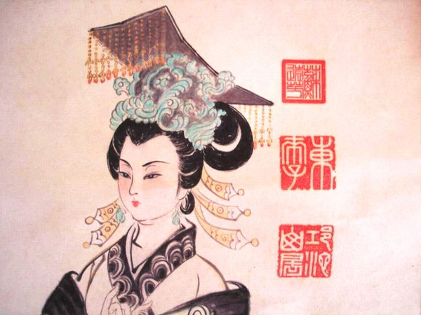

Đọc Lịch sử của Vũ Hậu, Trung Quốc đời Đường, có thể so sánh bà với Agrippine, vợ của vua Claude, mẹ của Néron Hoàng đế La Mã 600 năm trước. Tuy khác thời đại, khác phong thổ; nhưng cùng một giống đàn bà sắc nước hương trời, thông minh tuyệt bực, xảo quyệt gớm ghê, tàn bạo vô cùng, dâm ô thái quá, không ai kém ai!

NGƯỜI ĐẸP TRONG NHÀ TÙ.
Cô gái 14 tuổi, ở Hứa Châu, tên là Không, nhờ sắc đẹp kiều diễm mà được tuyển vào Cung Vua Đường Thái Tôn (1), không phải là thôn nữ “quê mùa” nhút nhát. Được vua Thái Tôn yêu chuộng, cô bé đã tìm cách chiếm trái tim của Hoàng đế, để được thỏa mãn một tham vọng lớn lao: làm “mẫu nghi thiê hạ”. Nàng Cung phi tuy nhỏ tuổi nhất trong đám mấy trăm Cung phi, nhưng tự biết rằng nàng đẹp hơn tất cả, khôn ngoan hơn tất cả, và được nhà vua yêu quý hơn cả. Nàng vẫn ngắm nghé Ngai Vàng, nhẫn nại chờ đợi, tự nghĩ rằng không sớm thì muộn nàng cũng sẽ lên ngôi Hoàng Hậu.
Trong lúc được Hoàng đế cưng yêu và được hầu hạ bên Long sàn, Vũ phi đã để ý đến người con trai của vua, Thái tử Lý Trị, vị Hoàng đế tương lai sẽ nối ngôi Cha. Thái tử Lý Trị mỗi lần đến thăm vua cha, cũng đã bị đôi mắt đa tình của Vũ phi thu hút, và nụ cười kín đáo đầy hứa hẹn của nàng đã làm cho vị Hoàng tử thanh niên, nhỏ hơn nàng 5 tuổi, say mê, âm thầm mơ ước…
Năm 649, Vua Đường Thái Tôn băng hà, thọ 53 tuổi. Vũ Phi kêu khóc rất thảm thương, mặc áo tang, bịt khăn tang, sửa soạn vào nhà tu cùng với tất cả các cung nữ khác, theo tục lệ trong Cung thời bấy giờ.
Thái tử Lý Trị lên nối ngôi Hoàng đế lấy niên hiệu là Đường Cao Tôn.
Trước khi vào nhà tu, Vũ phi đến cao biệt Tân Hoàng đế. Đường Cao Tôn nhìn người đẹp mặc tang phục càng đẹp thêm, màu áo trắng càng làm nổi bật đôi má hồng và làn tóc buông rủ xuống hai vai, huyền mờ, ảo nảo. Nàng khóc nức nở. Cao Tôn thương xót vô cùng, cảm động không cầm được lệ ngọc.
Vua bảo:
- Vũ phi vào chùa, Trẫm sẽ thường tới thăm.
Vũ Phi cúi đầu lạy tạ Cao Tôn, và lui gót. Đôi mắt nàng tràn trề châu lệ.
Vũ Phi đã 27 tuổi. Cao Tôn 22 tuổi, nét mặt thông minh nhưng còn ngây thơ, dáng điệu còn e ấp, tính tình còn yếu đuối.
Cao Tôn giữ đúng lời hứa, thường ngự đến nhà tu để thăm người đẹp đang đau khổ. Mỗi lần Hoàng đế vào phòng tu của Vũ phi, các cửa phòng đều đóng kín, để Hoàng đế an ủi giai nhân.
An ủi được một tháng thì Vũ phi bẽn lẽn.
- Muôn tâu Hoàng thượng tiện nữ đã có… thai
Nàng lại khóc thút thít:
- Muôn tâu Bệ Hạ, làm sao bây giờ đây? Không lẽ Phi ở trong nhà tu mà lại có thai ư? Không lẽ Phi ở trong nhà tu mà lại có thai ư? Tiện phi đã có thai thì ở trong nhà tu sao được nữa?
Đường Cao Tôn mỉm cười:
- Trẫm sẽ đem kiệu đến rước phi về ở trong Cung với Trẫm.
Trong Cung đã có Vương Hoàng hậu, vợ chính thức của vua. Cao Tôn liền dỗ dành Hoàng hậu:
- Hoàng hậu ở với Trẫm mười năm chưa có con. Trẫm muốn đón Vũ phi về cung để chờ ngày sinh Hoàng Nam. Hoàng hậu cứ yên tâm. Theo thường lệ, Vũ phi sinh con rồi thì làm thế nào Hoàng hậu cũng sẽ có thai.
Vương Hoàng hậu cũng còn trẻ, tính tình lại dịu lành, từ tốn, không nổi ghen mà cũng khôm dám cãi lệnh Vua. Cao Tôn vui mừng sai thị tỳ khiêng kiệu rồng đến nhà tu ở chùa Sư Nữ, đón rước Vũ phi hồi cung. Vũ phi hết lòng hết sức chiều chuộng Vương Hoàng hậu và thường nói với Hoàng hậu những lời tha thiết tri ân Hoàng hậu đã có lòng độ lượng tha tội cho thứ phi. Nàng rất khiêm nhường, lễ phép, không dám có một cử chỉ gì làm phiền lòng Hoàng hậu.
Đối với Cao Tôn, nàng vẫn có những nụ cười tình tứ duyên dáng, luôn luôn quỳ lụy, tôn kính và yêu đương, để dần dần chiếm trọn cả trái tim của nhà vua trẻ tuổi.
Nàng lại bỏ bạc vàng ra để mua chuộc các kẻ thị tỳ, các người hầu hạ, binh lính và các quan cận thần của vua.
Nàng ở cũ, sinh một công chúa. Vũ phi thất vọng: nàng vẫn cầu nguyện sinh Hoàng Nam để con nàng được nối ngôi thiên tử và để nàng dễ thực hiện cái mộng lên ngôi Hoàng hậu. Nhưng nàng chỉ thất vọng âm thầm, bề ngoài vẫn làm bộ vui mừng, sung sướng, bảo hỷ tín cho Hoàng đế và Hoàng hậu. Nàng đang sắp đặt mưu mô…
Vương Hoàng hậu báo tin sẽ đến thăm con. Hoàng hậu đến, Vũ phi mừng rỡ chỉ con trong nôi, để Hoàng hậu ẵm con lên hôn hít, nâng niu. Vũ phi làm dấu hiệu đuổi hết cá nữ tỳ ra ngoài, và nàng viện cớ là đi rửa tay, để Hoàng hậu ở trong phòng một mình với hài nhi. Một lúc lâu nàng trở vào. Hoàng hậu trao con cho nàng, để nàng đặt lại vào nôi. Hoàng hậu trò chuyện một lúc rồi ra về.
Vương Hoàng hậu vừa ra ngoài, thì Vũ phi liền bóp cổ đứa con cho nó chết. Xong, nàng lấy mền đắp lại, để cái xác hài nhi nằm nguyên trong nôi.
Vua Cao Tôn đến. Bước vào phòng, vị Hoàng đế trẻ tuổi lần đầu tiên được diễm phúc làm cha, tươi cười hỏi Vũ phi”
- Công chúa của Trẫm đâu nào?
Vũ Phi cũng vẫn làm bộ vui mừng, đưa vua đến gần nôi con. Nàng giở chiếc mền ra, toan ôm con lên cho vua xem. Nhưng hài nhi chỉ là cái xác, lạnh ngắt, mặt mũi bầm tím, nơi cổ lại có dấu tay ai đã bóp chết. Vũ phi hét lên:
- Trời ơi! Ai độc ác bóp cổ con tôi chết thế này?
Nàng giả vờ té xỉu xuống bên nôi, tay ôm xác con, kêu khóc ầm ĩ.
Vua Cao Tôn gọi các thị tỳ ra hỏi. Tất cả đều nói: lúc nãy có Hoàng hậu đến ôm công chúa. Rồi từ lúc Hoàng hậu ra về, các thị tỳ không đến xem công chúa, tưởng rằng công chúa vẫn nằm ngủ trong nôi. Còn Vũ phi thì đi tắm rửa, chỉ có Hoàng hậu ở trong phòng một mình.
Thôi, thế là đúng rồi, Hoàng hậu là thủ phạm. Hoàng hậu không có con, thấy Vũ phi sinh được công chúa, Hoàng hậu ghen ghét, bóp cổ cho công chúa chết! Chứ còn ai dám phạm tội ác như thế được?
Vũ phi la khóc rùm lên, và than van thảm thiết:
- Công chúa là con của Trời Phật ban cho Hoàng đế, là huyết mạch của Hoàng đế, mà Hoàng hậu nỡ đang tay ám hại con tôi ư?
Hoàng đế nổi giận, tin chắc Vương Hoàng hậu là thủ phạm, liền sai thị tỳ đi mời Hoàng hậu đến ngay lập tức. Vụ này làm xôn xao trong cung điện, gây ra phẫn uất cả Triều đình, ai cũng kết tội Vương Hoàng hậu là bất nhân thất đức, ghen tuông đến nỗi phạm một tội ác dã man như thế. Vương Hoàng hậu nhất định kêu oan, nhưng ai mà tin được nữa? Chứng cứ rành rành ra đó, ai mà dám bóp cổ công chúa mới oe oe ra chào đời được vài hôm? Ai, nếu không phải là Hoàng hậu vì ghen nên mất cả lương tâm?
Vua Cao Tôn truyền lệnh đem Vương Hoàng hậu ra pháp trường xử chém.
Nhưng bấy giờ Vũ Phi lại khóc lóc, xin Hoàng đế mở lượng hải hà mà tha tội cho Hoàng hậu: chẳng qua vì ghen với Vũ phi mà thôi, chứ lẽ nào Hoàng hậu lại có thể độc ác với hài nhi vô tội ư?
Vũ phi cầu khẩn xin tha, vì nàng tâu rằng nàng thương Hoàng hậu lắm. Nàng tôn kính và quý mến Hoàng hậu lắm…
Vua Cao Tôn nể lời Vũ phi, tha tội cho Hoàng hậu, nhưng vua vẫn hầm hầm tức giận người đàn bà độc ác.
Vua cúi xuống đỡ Vũ phi dậy và an ủi nàng…
Mưu mô tự tay giết chết con để vu oán cho Vương hoàng hậu, Vũ phi đã thành công, nhưng người đàn bà xảo quyệt kia còn có kế hoạch nguy hiểm hơn nữa vừa để bưng bít hành vi tội ác của mình, vừa thực hiện tham vọng cao xa. Nàng giả vờ khóc lóc xin Hoàng đế rộng lượng tha thức cho Vương Hoàng hậu, nhưng nàng lại âm thầm sắp đặt một mưu mô khác để thanh toán tình địch của mình, một cách kín đáo hơn và khéo léo hơn.
Một hôm, bỗng dưng vua đau một chứng bịnh kỳ lạ, cứ nhói nơi ngực, như thể có ai cầm dao đâm vào ngực vua. Các vị Ngự y được mời đến cấp tốc để xem bịnh cho Hoàng đế, đều không hiểu là bịnh gì.
LÊN NGÔI HOÀNG HẬU
Chợt có kẻ tìm thấy ở dưới gối của Vương Hoàng hậu một chiếc bùa vẽ hình vua, có đóng một cái đinh xuyên qua ngực. Chiếc bùa được đem trình lên Vua, trước mặt bá quan văn võ trong buổi Đại triều. Vua hằm hằm căm giận, lập tức truyền lệnh đem Vương Hoàng hậu ra pháp trường xử trả, vì chứng cớ đã rành rành ra đó. Nếu Hoàng hậu không cố tình ám hại vua thì tại sao có chiếc bùa kia ở ngay dưới gối bà? Mặc dầu có hai vị lão thần, là Phong huyền Linh và Đỗ như Hối cương quyết bào chữa cho Hoàng hậu, nhà vua nhất định không nghe. Huyền Linh dõng dạc nói:
- Muôn tâu Hoàng thượng, không có bằng chứng để kết tội Hoàng hậu.
Vua nổi giận chỉ ngay cái bùa:
- Chứng cớ đấy!
Đỗ Như Hối kính cẩn:
- Muôn tâu Bệ hạ, biết đâu có kẻ khác đem bùa kia giấu dưới gối Hoàng hậu để vu khống, và cố tâm làm hại Hoàng hậu chăng?
Vua trợn mắt hỏi:
- Kẻ khác là ai vậy?
Nhưng nào ai dám tố cáo ai!
Vũ Hậu núp sau màn nghe rõ hết, lặng lẽ chờ vua.
Lúc vua vào hậu cung, Vũ Hậu quỳ xuống khóc:
- Muôn tâu Hoàng đế, kẻ đàn bà tội ác ém bùa để hại thánh thể, chứng cớ đã rõ ràng. Nhưng cúi xin Hoàng đế mở lượng khoan hồng, tha cho hắn tội chết. Chỉ nên truất ngôi Hoàng hậu và giam hẳn dưới hầm kín chịu tội chung thân. Còn hai vị lão thần Phong huyền Linh và Đỗ như Hói, tuy đã có công giúp nước dưới thời tiên đế, nhưng ngày nay lại phản Hoàng đế, bênh vực cho mụ đàn bà kia thì nếu Hoàng đế còn tin dùng ắt là một hại lớn trong Triều đình, hậu quả không biết đâu mà lường được.
Nhà vua nghe lời Vũ Hậu, liền đầy hai vị trung thần đi hai tỉnh xa. Đồng thời, Vũ Hậu được vua tôn lên ngôi Hoàng hậu, thay thế cho Vương hậu bị truất phế. Lễ tôn Hoàng hậu năm 655, được cử hành rất trọng thể. Vũ Hậu lúc bấy giờ đã 32 tuổi, mặc chiếc áo gấm xanh thêu những con phụng bay, hai cánh xòe ra, sắc màu rực rỡ. Nàng đội chiếc mão bằng vàng nạm đầy kim cương, ngọc thạch. Vũ Hậu thiết triều để cho văn võ bá quan cung bái.
Trong lúc ấy, cựu Hoàng hậu bị còng chân còng tay, giam hãm trong một hầm đá, chật hẹp, tối om, đào sâu dưới đất ngay dưới nền cung điện. Cửa ngục chỉ chừa một lỗ nhỏ vừa đủ để ngày hai buổi lính đút vào một nắm cơm cho ăn.
Một buổi chiều, thừa dịp Vũ Hậu ngự du ngoài thành, Vua Cao Tôn không khỏi nhớ người vợ xưa hiền lành, duyên dáng, lén xuống ngục tối thăm bà. Trông thấy Vương hậu, ốm tong ốm teo, đầu tóc rũ rượi, mặt mày xanh mét, chỉ còn như cái xác không hồn, nhà vua hối hận, rưng rưng hai ngấn lệ. Vua nắm tay bà, hứa sẽ thả bà ra.
Nhưng khi vua vừa ở dưới hầm ngục lên thì có nữ tỳ của Vũ hậu đến mời vua sang cung. Vua không ngờ rằng Vũ Hậu có nuôi nhiều thám tử. Nàng đi dạo chơi vừa về đã có chúng tâu lại rõ ràng việc Vua lén xuống ngục tối thăm Vương hậu.
Vũ hậu hỏi vua:
- Trong lúc thiếp đi chơi vắng, chẳng hay Bệ Hạ làm chi?
- Trẫm ở trong cung xem sách.
- Bệ Hạ có ngự xuống ngục tối thăm kẻ nữ phạm nhân kia không?
- Không.
Vũ Hậu lặng lẽ, không hỏi gì nữa. Nhưng nàng sai lính xuống hầm lôi Vương hậu ra đánh một trăm roi. Xong, nàng truyền lịnh chặt hai tay hai chân bà, rồi ngâm bà trong một thùng rượu. Hôm sau bà chết, trong Cung điện không còn ai dám nhắc đến tên bà nữa.
Thấy vua Cao Tôn hèn nhát, khiếp sợ nàng. Vũ Hậu một ngày mỗi lộng quyền, nhất là từ năm 660. Nàng độc đoán đối với vua, tàn ác với các Hoàng thân trong Tôn thất nhà Đường, khắc nghiệt với bá quan văn võ. Nàng không bằng lòng người nào, liền đày người ấy ra khỏi Trường An, kinh đô nhà Đường, hoặc buộc người ta phải uống thuốc độc, hay thắt cổ tự tử. Ai cưỡng lại, nàng bắt chém ngay. Vợ và con gái của những vị quan vô phúc ấy đều bị bắt vào cung để làm tôi tớ cho nàng. Vua Cao Tôn biết những gia đình này oan ức vô tội, nhưng nhà vua đã để cho Vũ Hậu cướp hết cả quyền hành, đâ còn dám bênh vực, che chở cho ai. Hơn nữa, nàng cấm tuyệt các cung nữ không được đến gần vua, sợ rằng sẽ có một nàng quý phi mới chiếm được lòng vua rồi sẽ hại nàng và thay thế nàng. Nàng nhất quyết giữ độc quyền ngôi Hoàng hậu để một mình tự do lung lạc trong Cung cấm nhà đường.
THI SĨ LẠC TÂN VƯƠNG.
Hàn Quận chúa là chị ruột của Vũ Hậu. Nàng đẹp hơn Vũ Hậu nhiều và hiền lành dịu dàng hơn. Hàn Quận chúa được vua yêu chuộng và có thai, sinh được một Hoàng nam. Bỗng dung, một hôm, Hàn Quận chúa vừa ăn cơm xong thấy đau bụng dữ dội rồi lăn ra chết, sùi bọt mép…Vũ Hậu vờ vĩnh thương tiếc chị, khóc lóc rất là thê thảm.
Hàn Quận chúa cũng đã có một người con gái lớn, Vệ công tước, rất đẹp, thường ra vào Cung điện. Một hôm giai nhân ăn cơm xong cũng đau bụng rồi chết, y như trường hợp của mẹ. Vũ hậu cũng thương xót cô cháu bất đắc kỳ tử, và khóc la thảm thiết vô cùng.
Thấy thảm cảnh trong Cung điện như thế, vua Cao Tôn buồn rầu, sinh bịnh hoạn. Nhà vua âm thầm đau khổ, đâu dám tỏ tâm sự cùng ai. Chỉ có một hôm, viên tể tướng hỏi nhỏ nhà vua:
- Tâu Bệ Hạ, thần trộm xem như dạo này ngọc thể bất an….
Vua gật đầu, nói thầm:
- Trẫm buồn vì Vũ Hậu lạm quyền, giết hại bao người vô tội.
- Tâu Bệ Hạ, nếu Bệ Hạ truất ngôi Vũ Hậu, ắt triều chính sẽ yên.
- Trẫm cũng đã nghi như thế. Vậy khanh viết sắc lệnh đưa Trẫm xem. Nhưng khanh phải giữ bí mật, rất bí mật đấy nhé!
- Thần xin tuân lệnh.
Không biết làm sao thám tử của Vũ Hậu lại biết được vụ âm mưu “đảo chính” này, và tố cáo với nàng. Hôm sau, vua Cao Tôn ngồi trên ngai vàng, đang xem tờ sắc lệnh thì Vũ Hậu chợt bước vào. Nàng tiến đến vua:
- Hoàng thượng đang ngự lãm giấy gì thế?
Vua hốt hoảng, vội giấu tờ sắc lệnh trong áo. Nhưng Vũ hậu đòi xem cho kỳ được. Hoàng đế sợ run lên, không dám giấu tờ giấy bí mật nữa, trao cho Vũ hậu và bảo:
- Đây chỉ là bản dự thảo sắc lệnh chớ không phải sắc lệnh.
- Ai viết đây? Hoàng Thượng cho thiếp biết được chăng?
Nhìn thấy nét mặt giận dữ của Vũ Hậu, vua Cao Tôn liền ấp úng trả lời:
- Phó Tể..tể tướng viết đấy.
Vũ Hậu liền gọi quân hầu bắt Phó Tể tướng đem ra chém đầu ngay giữa chợ, và bắt vợ con vào cung làm tôi tớ cho nàng…
Chính sách bạo tàn kinh khủng của Vũ Hậu khiến cho trong Triều đình, ngoài dân gian ai nấy đều khiếp đảm uy quyền của nàng. Duy có một người nhất định không sợ, và quyết tâm chờ đợi cơ hội để nổi dậy cuộc đảo chính. Người ấy là một thi sĩ, một trong nhóm thi nhân “Tứ Kiệt” có danh tiếng nhất ở thời bấy giờ: Lạc Tân Vương (Lo Pin Wang).
Lạc Tân Vương, tác giả bài thơ bất hủ “Dịch thủy tống biệt”, đã có lời phê bình Vũ Hậu như sau đây, ngay sau lúc nàng âm mưu vu cáo cho Vương Hoàng hậu bóp cổ chết con nàng:
Mày cong như râu bướm,
Nhan sắc chịu nhường ai!
Vu cáo người, không gớm,
Che mặt sau cánh tay!
Mê hoặc Vua hôm sớm,
Hồ ly tinh, ghê thay!
(N.V dịch)
Lúc bấy giờ, có thể nói rằng nhà thơ Lạc tân Vương hầu như là người duy nhất không biết sợ uy quyền của Vũ Hậu. Nhưng không sợ cũng không làm gì được người đàn bà hiểm độc ấy. Chính trưởng nam của nàng là Thái tử Lý Hoằng, một hôm không tuân lịnh của nàng, liền bị chết ngay sau khi ăn cơm trúng thuốc độc.
Nàng giết con trai trưởng như thế, rồi cho con trai thứ, là Hoàng tử Lý Hiền, lên làm Thái tử. Lý Hiền vẫn nơm nớp lo sợ, xin ra ở riêng ngoài thành. Không bao lâu, Lý Hiền lại bị mẹ tình nghi là có ý phản loạn, và bị đày ra quan ải. Nơi đây, Lý Hiền chết một cách hoàn toàn bí mật, do lịnh của Vũ Hậu.
Vua Đường Cao Tông, phần bị buồn phiền, loại trí, phần lo cho uy thế của nhà Đường suy sụp, càng ngày càng đau nặng. Năm 693, vua mắc chứng bệnh phong huyễn, đầu lại bị sưng lên, đôi mắt gần mù. Các vị Ngự y dùng khoa châm cứu để chữa bịn cho vua…Vũ hậu lúc bấy giờ đã có thâm ý để cho vua chết, bèn nổi giận la mắng ngự y:
- Sao các ngươi dám lấy tay sờ mó trên long nhãn của Hoàng đế? Tội các người đáng chết chém!
Nhưng nhà vua cứ để các ngự y châm cứu thử xem may ra hết bịnh. Không ngờ nhờ môn châm cứu ấy mà đôi mắt vua khỏi mù, đầu vua hết sưng. Vũ Hậu giả vờ reo mừng hoan hỉ, vội vàng lấy một trăm thước lụa ban thưởng cho các ông thầy thuốc. Nhưng một tháng sau tự nhiên bịnh vua tái phát một cách vô cùng bí mật, và ngày 27 tháng 12 năm 683, vua Đường Cao Tôn băng hà…cũng một cách bí mật vậy.
Tuân lịnh của Vũ Hậu, Triều thần tôn Hoàng tử thứ ba, là Lý Triết lên ngôi, lấy niên hiệu Trung Tôn Hoàng đế.
Sự thật, thì Trung Tôn làm vua để lấy vì đó thôi, chứ tất cả quyền hành đều ở trong tay Vũ Hậu.
Trung Tôn lên làm vua cũng chẳng được bao lâu, liền bị Vũ Hậu truất ngôi, đầy đi tỉnh xa. Hoàng Tử thứ tư, Lý Đản, lên thay thế, nhưng cũng bị Vũ Hậu giam trong cung cấm không cho tiếp xúc với Triều đình
Tháng 9 năm 690, Vũ Hậu lại truất phế thái tử Đản, rồi nàng tự xưng là Vũ Tắc Thiên Hoàng Đế (Wou Tsotien).
THI SĨ CẦM ĐẦU CUỘC ĐẢO CHÍNH…HỤT
Đời chính trị của Vũ Hậu thật là đầy tội ác. Không ai ngờ rằng một bà Hoàng Hậu có thể giết chồng giết cond dể cướp ngôi thiên tử, và thi hành một chính sách độc tài bạo ngược, ngồi trên đầu trên cổ một nước Tầu đang cường thịn, và rộng mênh mông dưới thời nhà Đường. Nước Tàu của Vũ Hậu còn rộng hơn Trung quốc ngày nay: Phía Bắc gồm cả Cao ly, Mãn Châu, phía Tây đến biên giới Thổ nhĩ Kỳ, phía Tây Nam bao cả Tây Tạng, phía Nam chiếm cả Giao chỉ (bắc Việt bây giờ). Hơn nữa một châu Á trên mấy trăm triệu người đều phải cúi đầu khom lưng làm nô lệ cho một người đàn bà chuyên chế bậc nhất trong Lịch sử nhân loại.
Về đời tư, Vũ Hậu cũng là một người đàn bà dâm ô số 1. Bà đã gần 70 tuổi, nhưng trong Cung điện của bà chỉ chứa toàn những bọn trai tráng từ 29 đến 35 tuổi, các ông thầy chùa còn trẻ măng, để thỏa mãn nhục dục của bà. Những chàng thanh niên ấy đều phải đánh phấn, thoa son và tranh nhau làm duyên dáng để được Nữ hoàng chiếu cố đến. Mỗi đêm, bốn năm cậu phải luân phiên nhau hầu hạ bà, kế tiếp nhau từ canh một đến canh năm. Trong số đó, có hai anh em họ Tchang, 21 và 20 tuổi, là được Vũ Tắc Thiên sủng ái hơn cả.
Nhà Đường có rất nhiều thi sĩ có tài và có tiếng. Nhưng vẫn có một số các nhà Thơ tầm thường chỉ ca tụng Vũ Hậu, để được Vũ Hậu ban cho ân huệ. Cũng như dưới các chế độ độc tài phong kiến, luôn luôn có một bọn “văn nhân”, “thi sĩ”, chuyên môn nịnh bợ uy quyền cầu mong các vị thánh chúa ban thưởng bạc vàng, địa vị. Bọn đó thường có khi vỗ ngực tự xưng là Thi Hào, Thi Bá, làm Thơ viết sách để tâng bốc nhà vua, lập hội lập đàn để suy tôn thánh thượng. Bọn Văn nô đó, từ Cổ chí Kim, ở xứ nào cũng có cả.
Nhưng vẫn có một số thi nhân chân chính, đứng hẳn ra ngoài, nhất định không hùa theo. Nhà thơ quyết liệt chống lại Vũ Hậu chính là Lạc tân Vương một thi sĩ có thiên tài, có chí khí, có lòng yêu nước, yêu dân, thương xót người đồng loại bị kẻ phụ nữ chuyên quyền áp bức. Thi sĩ cầm đầu một nhóm người cách mạng, trong đó có Từ Kính Nghiệp và các con cháu Cựu hoàng Đường cao Tôn, nổi dậy ở Dương Châu, Thi sĩ tự tay viết tờ hịch kể tội Vũ Hậu. Trong hịch có câu:
“Ngôn do tại nhĩ, trùng khởi vong tâm. Nhất phần chí thổ vị can, lục xích chí co hà tại?” Lời nói “của tiên đế” còn văng vẳng bên tai, lòng trung quân há dễ quên được ư? Một nấm đất chưa khô (vua Cao Tôn vừa băng hà), mà đứa con mồ côi sáu thước kia đâu? (hoàng tử Đản bị giam cầm).
Tờ hịch này gây ra cảm xúc mạnh mẽ trong nhân gian, đến cả Vũ Hậu xem cũng phải giật mình. Nhưng cuộc đảo chính thất bại, Từ Kính Nghiệp bị chặt đầu, bọn quân lính của Vũ Hậu dâng thủ cấp lên bà rồi đem bêu ra ngoài chợ. Lại một lần nữa, Vũ Hậu thắng thế. Uy quyền càng thêm mạnh. Thi sĩ Lạc tân Vương buồn lòng, vào trú trong chùa Linh Ấn, cạo đầu đi tu, sau làm Hòa thượng. Số người trí thức và bình dân theo Nghĩa quân bị bắt bớ, tù tội, giết chóc vô số kể.
CUỘC ĐẢO CHÍNH THỨ BA. CÁI CHẾT BUỒN THẢM CỦA VŨ HẬU
Nhưng mọi việc đều kết cuộc theo lòng Trời. Vũ hậu củng cố Ngai vàng được 15 năm, bằng xác chết, bằng căm thù, bằng oán hận của toàn dân.
Bà đã 80 tuổi. Thể xác đã mòn mỏi, tinh thần kiệt quệ, các kẻ tôi tớ trung thành với bà đều dần dần xa lánh, hoặc bị giết chết một cách thê thảm. Quân lính cũng chán nản vì chính sách tham tàn bạo ngược của một người đàn bà khát máu, không còn muốn ủng hộ chính sách của Vũ Hậu nữa. Một buổi sáng tinh sương, đầu tháng giêng năm 705, một bọn lính cầm dáo mác ùa vào cung điện giết chết hết bọn trai tráng trong “A phòng” và chặt đầu hai anh em chàng Tchang cưng nhất của bà. Chính tể tướng Trương Gián Chỉ chỉ huy cuộc đảo chính này, Vũ Hậu nằm trong buồng, nghe tiếng kêu la kinh hãi, vội vàng chạy a. Gặp Trương Gián Chi, bà hỏi:
- Chuyện chi thế, Tể tướng?
Một tên lính kề gươm vào cổ bà, nhưng Tể tướng khoát tay bảo:
- Đừng giết hắn.
Tể tưởng buộc Vũ Hậu phế vị tức khắc, và bỏ nhà Chu, khôi phục nhà Đường, tái lập Lư lăng Vương lên ngôi (Đường Trung Tôn), bắt giam Vũ Hậu trong ngục (22 tháng 5 năm 705).
Cuộc đảo chính thành công, và cả sự nghiệp bạo tàn dâm loạn của Vũ Hậu trong hăm mấy năm trời bị sụp đổ trong nháy mắt.
Vũ Hậu chết âm thầm, lạnh lẽo trong ngục thất, vài tháng sau. Bà thọ được 81 tuổi. Có sách nói là 83 tuổi. Người ta chôn xác bà Vũ Tắc Thiên Hoàng đế như một kẻ ăn mày, không một ai thương tiếc.
SAU VŨ HẬU, ĐẾN VI HẬU…
Chuyện Vũ Hậu đến đây đã chấm dứt. Nhưng rồi Đường Trung Tôn lên nối ngôi, cũng lại bị một thiếu phụ là Vi Hậu chuyên quyền.
Trung Tôn là một nhà vua quá hiền lành, yếu ớt, cả ngày chỉ thích xem Kinh Phật để cho Vi Hậu lộng quyền trong cung cấm.
Dưới thời Vũ Hậu, có ông sư Trần Huyền Trang (Yi-Tsing) người ở Hồ Bắc, năm 671 đi theo đường biển, ghé Sumatra, sang Tích Lan và Ấn Độ học Kinh, 24 năm sau Thầy trở về Tàu (năm 695), thỉnh về trên 650 quyển Kinh, bộ kinh Tam Tạng, và dịch ra Hoa ngữ. Vua Trung Tôn mời thầy vào cung để dậy Kinh Phât, hoặc chính vua thân hành đến chùa để dịch Kinh Tam Tạng với Thầy. Vua mê học Phật, bỏ bê việc nước cho Vi Hậu.
Vi Hậu lại là một người đàn bà dâm dục không kém gì Vũ Hậu, không kém gì Messaline của La Mã thuở xưa. Vi Hậu gả con là công chúa Trường Lạc cho Vũ sùng Huấn, con trai của Vũ tam Tư (Wo San Sseu). Ông này lợi dụng tình nghĩa suôi gia, thường ra vào tự do nơi cung điện rồi tư thông với Vi Hậu (Wei). Thái tử Trọng Tuấn, là con riêng của vua Trang Tôn, lập mưu giết Vũ tam Tư và Vi hậu, không ngờ cuộc âm mưu bị bại lộ, thái tử TRọng Tuấn bị giết. Vi Hậu bỏ thuốc giết luôn chồng (3 tháng 7 năm 710) để một mình rảnh tay cai trị. Nhưng đêm 25 tháng 7, Hoàng tử Long Cơ đem binh nào cung, giết Vi Hậu và cả gia đình họ Vũ. Quân lính cắm thủ cấp của Vi Hậu trên lưỡi mắc đem bêu ra giữa chợ, bỏ mặc cho dân chúng lấy xuống chà đạp, và quăng xuống hồ.
Thái tử Long Cơ tôn cha là Tương Vương lên ngôi, lấy niên hiệu là Đường Duệ Tôn (Jouei-Tsong).
Duệ Tôn ở ngôi chỉ hai năm, rồi tự ý thoái vị làm Thái thượng hoàng, nhường ngôi cho Thái tử Long cơ ngày 8 tháng 9 năm 712. Long Cơ lên nối nghiệp Đế, lấy niên hiệu là Đường Huyền Tôn (Hiuan-Tsong), tức là vua Đường Minh Hoàng (712-759).
Đường Huyền tôn nổi danh trong Lịch sử là một vị hoàng đế vĩ đại, một đáng minh quân của thời Thịnh Đường, thời đại lý thái bạch và đỗ phủ. Nhưng về sau trong nước ông cũng có loạn An Lộc sơn chỉ vì một nụ cười đổ nước nghiêng thành củ một giai nhân khác là Dương Quý Phi (Yang Kouei Fei)…